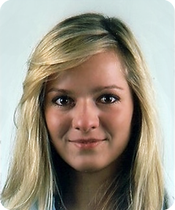
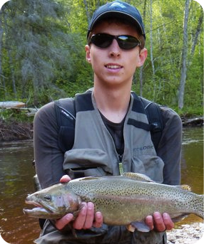
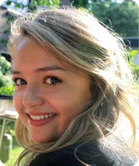
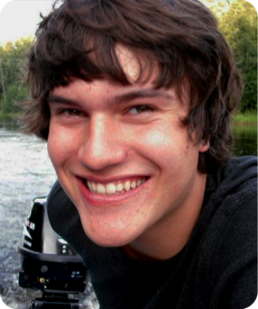

General Information
The IB exam is a stressful time for all students. We understand because we have been there ourselves. The Biology revision course aims at helping IB students grasp the most important and difficult concepts that appear in the exam. We provide help in approaching difficult exam questions by offering summary presentations and by reviewing past exams. Since we work in small groups of five students to one teacher, we can review parts of the syllabus in detail to meet student's individual learning needs.
Like with every IB subject, but especially so for Biology, there is a vast amount of material to cover. We save time by presenting the essential information in a clear, concise and structured manner. We help students to develop revision techniques in order to retain the large bodies of information necessary. Whether a student finds Biology difficult in general or is looking to get that elusive 7, the UC Academy Biology revision course caters to everyone's individual needs.
Options
On the fourth day we examine the Biology options. Students may choose two summary lectures for the options of their choice. Since option F: Microbes and Biotechnology is very unpopular we choose to exclude it from the course.
Course Structure
NB: This is the higher level Biology course structure. The standard level structure will be slightly different. The schedule may be subject to changes.
Day One
- Statistical Analysis
- Cells
- Chemistry of Life
- Nucleic Acids and Proteins
Day Two
- Genetics
- Human Physiology
Day Three
- Ecology and Evolution
- Cell Respiration and Photosynthesis
- Plant Science
Day Four
Items to Bring
Please make sure to bring the following items to class.
- Notebook
- Graphic Calculator
- Pens and Pencils
- IB Booklet
|

|
| Teacher |
Annika Semmler |
| Email |
biology@ucacademy.nl |
|
Hi! My name is Anikka and I'm one of the head teachers of Biology at the UC Academy. I currently study at University College Utrecht where I take the pre-medicine track. I joined the UC-Academy because I wanted to develop myself further as a teacher. Using their methods and my own knowledge and experience of teaching and biology I feel that I can offer a unique perspective that will help students take their exams with confidence.
|
|
General Information
Chemistry is a subject that combines knowledge, skills and understanding. Improvement on these three related facets will greatly improve your grade. UC Academy therefore refreshes your knowledge on the most important concepts and shows how more difficult concepts follow logically, enhancing your understanding of Chemistry. We provide tools and strategies to solve typical exam questions, giving you handles to approach questions even when you get stuck.
Classes run from 09:00 – 18:00 every day during which theory and exercise sessions take place. On the first three days optional exercise session will be offered in the evenings from 19:00 – 21:00 in which students can work on the material they found most difficult during the day. This is also the time to ask questions and receive personal attention about the options, which are not part of the daily program.
Options
The IB Physics options are not addressed explicitly during the course, however students are encouraged to prepare and bring any questions they have about the options to the evening exercise sessions. There the teachers will be prepared and willing to address students' individual needs.
Course Structure
NB: This is the higher level Chemistry course structure. The standard level structure will be slightly different. The schedule may be subject to changes.
Day One
- Stoichiometry
- Atomic Theory
- Periodicity
- Bonding
Day Two
- Energetics
- Kinetics
- Equilibrium
Day Three
- Acids & Bases
- Oxidation and reduction
Day Four
- Organic Chemistry
- Mock Exam
- Correction of own Mock Exam
Items to Bring
Please make sure to bring the following items to class.
- Two A4 Notebooks
- IB-Approved Graphics Calculator
- Coloured Pens and Pencils
- IB Chemistry Data Booklet
|
|
| Teacher |
Victoria Defeli Defelippe Diaz de Espada |
| Email |
chemistry@ucacademy.nl |
|
|
|
General Information
Achieving excellence in IB economics involves a variety of skills; besides knowledge of the material, a balance of analysis, structure, and presentation are all essential tools which a student must be aware of in order to fulfill his or her potential. UC Academy aims to aid students attain this fine balance of skills and increase their capabilities before sitting for the final exams. By the end of the course, students will not only have a firmer grip on the material, but hopefully gain a new and more successful approach to economic thinking according to the highest criteria set by the IB and confidence in their abilities during the exams.
Options
The IB Physics options are not addressed explicitly during the course, however students are encouraged to prepare and bring any questions they have about the options to the evening exercise sessions. There the teachers will be prepared and willing to address students' individual needs.
Course Structure
The four days are divided into the four main sections of the curriculum. Half of the time will be allocated to lecturing while the other half to application of knowledge through selected exercises from previous exams, though this may vary according to student needs and wishes.
NB: This is the higher level Economics course structure. The standard level structure will be slightly different. The schedule may be subject to changes.
Day One
- Basic Economic Principles and Microeconomics
Day Two
Day Three
Day Four
Items to Bring
Please make sure to bring the following items to class.
- Two A4 Notebooks
- Pens and Pencils
- A Calculator
- The Textbook
- A Ruler
|
|
| Teacher |
Yuval Preiss |
| Email |
economics@ucacademy.nl |
|
Hi! my name is Yuval Preiss and I'm one of the head teachers at UC Academy. Since completing my IB-Diploma, I have gained experience and enhanced my understanding of economic phenomena through higher education on University College Utrecht. I joined the UC Academy to learn more about the art of teaching and spread my love of economics. I hope to see you in one of my classrooms soon!
|
|
General Information
Preparing for IB geography can be daunting as it is often unclear what exactly is wanted from the student at the exam. Fortunately, succeeding at IB Geography is not all that impossible. Over the years it has become evident that certain topics get much more attention in the exams than the rest of syllabus. We go through the essentials of the syllabus, making sure that every student is prepared to tackle the topics that get tested over and over again. Using our method we ensure that the essential information that is presented is grasped, retained and applied!
The course consists of three days for SL students and four days for HL students. Therefore, standard level students pay a reduced price of 390 euros.
Options
Please make sure that you specify the options that you prefer (usually the ones you studied in high school) during registration. HL students should indicate three options, while SL students should only indicate two.
All options will be covered in-depth, and we guarantee that you will get the options you choose during registration. SL students will be given a choice of either studying an extra option (in addition to the two they choose) or spending more time on practice exam papers.
Course Structure
Day One
On the first day we will focus on the core part of the syllabus.
- Populations in transition
- Disparities in wealth and development
- Patterns in environmental quality and sustainability
- Patterns in resource consumption
At the end of day one there will be a mock exam of Paper 1.
Days Two and Three
These two days will be spent focusing on the optional themes of the syllabus. HL students are required to study three of the following options, while SL students need to study two.
- Freshwater: issues and conflicts
- Oceans and their coastal margins
- Extreme environments
- Hazards and disasters: risk assessment and response
- Leisure, sport and tourism
- The geography of food and health
- Urban environments
At the end of the third day there will be a mock exam of Paper 2.
Day Four
On the fourth day, which only applies to the higher level course, we will focus entirely on the HL Extension of the syllabus. The following topics will be covered.
- Measuring global interactions
- Changing space: the shrinking world
- Economic interactions and flows
- Environmental change
- Sociocultural exchanges
- Political outcomes
- Global interactions at the local level
At the end of the fourth day there will be a mock exam of Paper 3.
Items to Bring
Please make sure to bring the following items to class.
- Two notebooks
- A pen, pencil and eraser
- Coloured pencils
- A ruler
|

|
| Teacher |
Emils Pakarklis |
| Email |
geography@ucacademy.nl |
|
Hi, my name is Emils and I'm one of the head teachers at the UC Academy. When I was doing IB, nobody told me what I really needed to know to get good grades. I had to figure it out myself. I can't change that now, but I can help you with what I've learned along the way. Whatever your current level, I can assist you in getting better grades than you currently are. Hope to see you soon!
|
|
General Information
The IB history exam is renowned for the vast amount of information students are expected to know and be able to recall at a moment's notice. UC Academy helps students achieve their full potential, while at the same time engendering confidence, and easing some of the strain of the exam period. By the end of the course students will have acquired in-depth knowledge on each of the individual topics, as well as the historical debates that revolve around them. Students will have a chance to apply and hone their new skills during several practice exams, where they will receive personal feedback from their teachers.
Our aim is to help students get the most out of their exam, regardless of their current level. For the less experienced history student, this course offers a chance to come to grips with dense material in a structured manner, while for the more practiced we offer an opportunity to revise important topics and perfect their exam skills.
Lunch and dinner will be provided. Every evening, after dinner, there will be an optional exercise session in which students can work on the material that they found most challenging during the day.
Options
-
Paper One
- Peace-making and peacekeeping and international relations.
-
Paper Two
- Causes, practices and effects of war.
- Origins and development of authoritarian and single party states.
- The Cold War.
-
Paper Three
-
Aspects of the history of Europe and the Middle East.
Course Structure
NB: The schedule may be subject to changes.
Day One
- Exam Technique Paper 1
- Paris Peace Treaties
- International Relations
- League of Nations
- Practice Exam Paper 1
Day Two
- Feedback Paper 1
- Exam Technique Paper 2
- World War One
- Spanish Civil War
- World War Two
- Chinese Civil War
- Practice Exam Paper 2
Day Three
- Feedback Paper 2
- Cold War
- German Unification
- Italian Unification
- Bismarck Foreign and Domestic Policies
- Alexander I
- Practice Exam Paper 3
Day Four
- Feedback Paper 3
- Russian Revolution
- Stalin
- Khrushchev
- Extra Time for Questions
Items to Bring
Please make sure to bring the following items to class.
- Three small A4 notebooks or two A4 ringbinders
- Four different coloured pens
- A pencil
|

|
| Teacher |
Sanne van der Steeg |
| Email |
history@ucacademy.nl |
|
Hi! My name's Sanne and I teach history at the UC Academy. I have always enjoyed studying history, including the interesting facts and figures, as well as the essay writing. I decided to join UC Academy to further my teaching skills and because I also enjoy getting to know new people. UC Academy also gives me the perfect opportunity to share my knowledge and tips and tricks with you, so that hopefully you will be rewarded with the grades you wish for!
|
|
General Information
The UC Academy Math course is designed with students that differ in interests, needs and capabilities in mind. Whether you are planning to study history or science at university, everybody needs to do math. It is therefore worth being good at.
During the crash course, we will go through all the syllabus requirements. We guide you from the very basics up to the last line in the syllabus. Nonetheless, we have put focus on the most important, repetitive and highest scoring parts to make the four days as effective as possible.
From our own experience, we know that practice makes perfect. After brief lectures on solving strategies per topic, you will solve carefully selected exercises from dozens of exams, finally enabling you to work out problems that seemed impossible before. This will give you the confidence to solve math exam questions yourself when you finally seat your exams.
Options
We only offer mathematics standerd level, therefore there are no options.
Course Structure
NB: The schedule may be subject to changes.
Day One
- Algebra
- Functions and Equations
Day Two
- Circular Functions
- Trigonometry
- Matrices
- Vectors
Day Three
- Differentiation
- Applications of Differentiation
- Integration
- Applications of Integration
Day Four
- Statistics
- Probability
- How to Use the Calculator
Items to Bring
Please make sure to bring the following items to class.
- Two notebooks
- Pencils, pens and highlighters
- Graphics calculator (IB approved)
- IB Math data booklet
- Ruler
|
|
| Teacher |
Robert van den Heuvel |
| Email |
mathematics@ucacademy.nl |
Hi, my name is Robert and I'm a head teacher of mathematics at the UC Academy. In my experience, many students have difficulty connecting the IB exam questions to the relevant theory. In order to make your lives easier, we train you to use a step-by-step approach to solve your questions and help you recognize the questions so that you know when to apply our approach. I hope to see you in my class soon!
|
|
General Information
The UC Academy IB Physics course aims to provide a concentrated learning experience which facilitates IB students in making the most of their ability. Regardless of your skill level, we will help you to improve your performance on IB exams. Struggling on the boundary between a 3 and a 4? Hoping to add a point to your 4 or 5? Aiming to achieve that elusive 7? We will take a personal interest in helping you to achieve your goal.
We believe that any IB physics-student will benefit from our student-first, exam-oriented approach to teaching as well as practice, practice, practice. Therefore, we select young teachers not only on academic grounds but also on their sociability, making them able to address difficulties in a way that students will understand. We take an exam-oriented approach to the material: there will be exercise sessions after every module in which students practice exam questions and teachers will provide tips and tricks from their own exam experience that students can immediately put to use.
All in all, our course creates an intensive yet enjoyable environment in which IB students are provided with the knowledge, tricks and recipes necessary to develop their skills and improve their performance on the IB exam.
Lunch and dinner will be provided. Every evening, after dinner, there will be an (optional but strongly recommended) exercise session in which students can work on the material they found most difficult during the day. This is also the time to ask questions and receive personal attention about the Options, which are not part of the daily program.
Options
The IB Physics options are not addressed explicitly during the course, however students are encouraged to prepare and bring any questions they have about the options to the evening exercise sessions. There the teachers will be prepared and willing to address students' individual needs.
Course Structure
NB: This is the higher level Physics course structure. The standard level structure will be slightly different. The schedule may be subject to changes.
Day One
- Basic Notions and Techniques in Physics, Exercise Solution Tips
- Mechanics
- Thermal Physics
Day Two
- Oscillations and Waves
- Field Physics
Day Three
- Electric Currents
- Electromagnetic Induction
- Recap of Days One and Two
- Atomic, Quantum and Nuclear Physics
- Energy, Power and Climate Change
Day Four
- Digital Technologies
- Recap of All Material
- Mock Exam
- Correction of own Mock Exam
Items to Bring
Please make sure to bring the following items to class.
- Calculator
- Coloured Pens and Pencils
- IB Physics Syllabus
- IB Physics Data Booklet
- A4 Grid-Paper Notebook
|

|
| Teacher |
Daniel Rutten |
| Email |
physics@ucacademy.nl |
|
Hi! My name's Daniel and I teach physics at the UC Academy. I'm in my third year at University College Utrecht, where I study physics and philosophy. Before coming to the University College, I completed my IB (maths, chemistry and physics HL) in the Netherlands and GCSE's in Singapore. I chose to teach at the UC Academy because I am interested in education and, especially, in meeting internationals, expats and 'third-culture kids' like myself. Should you decide to come study with us, I look forward to seeing you at UC Academy.
|
|
|